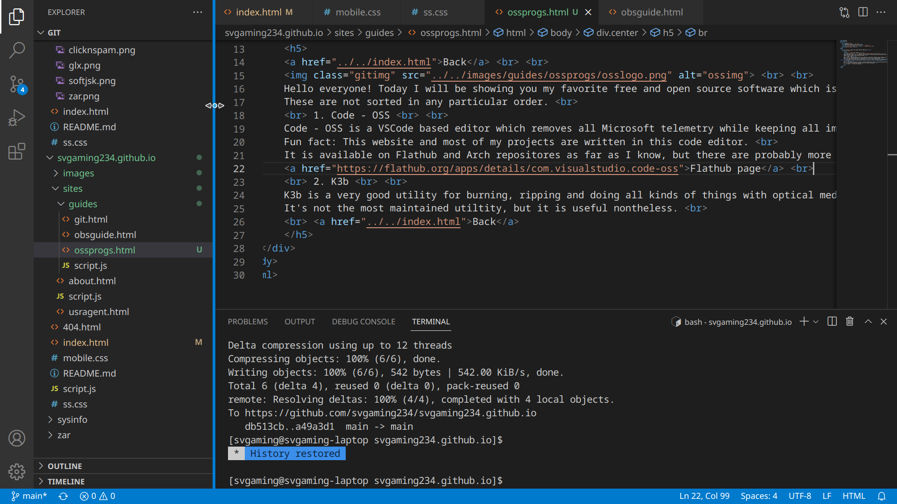
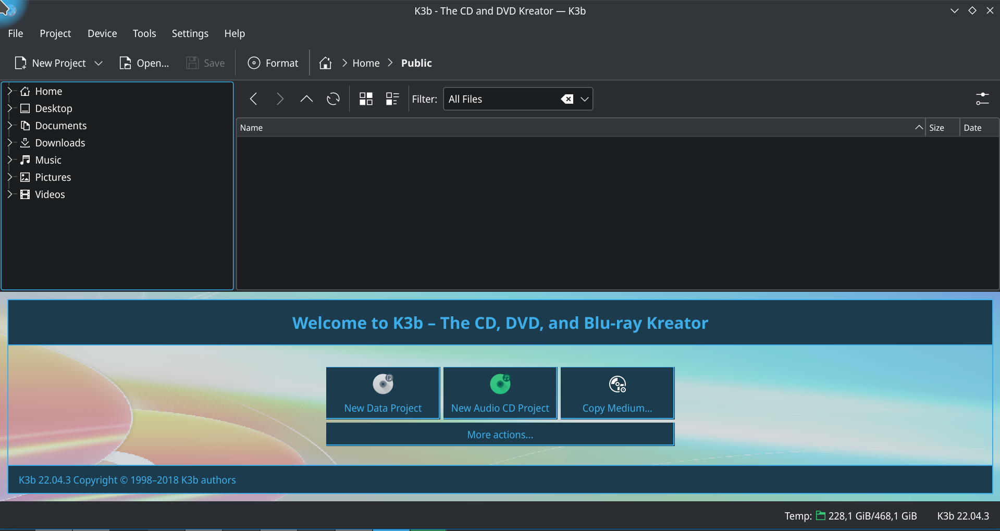
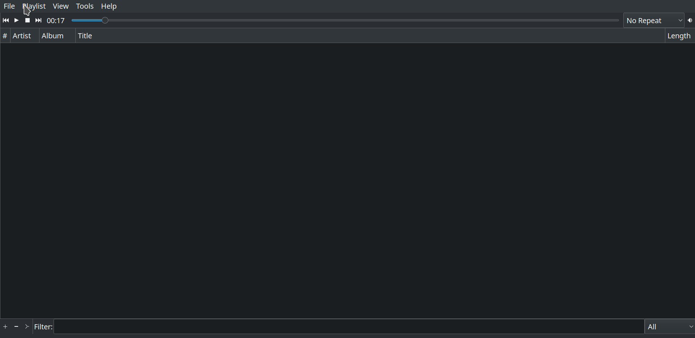
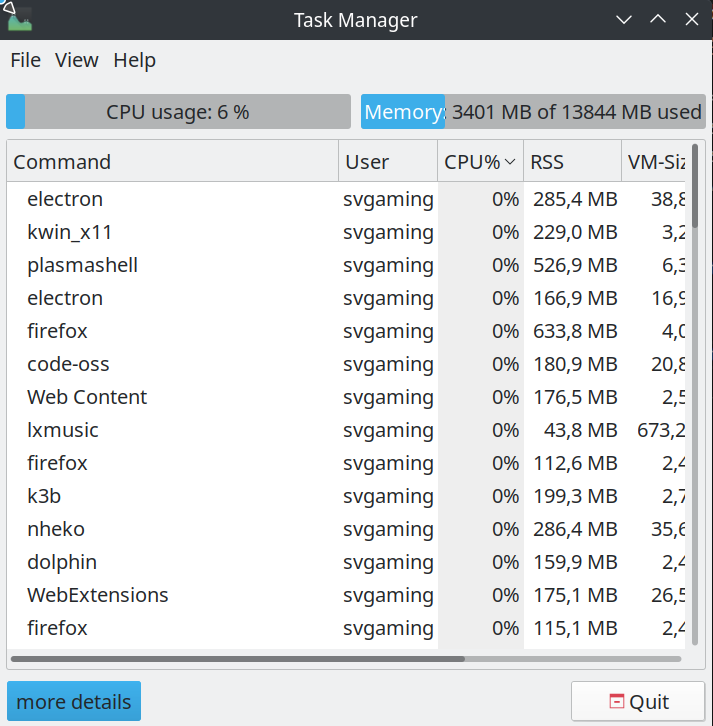
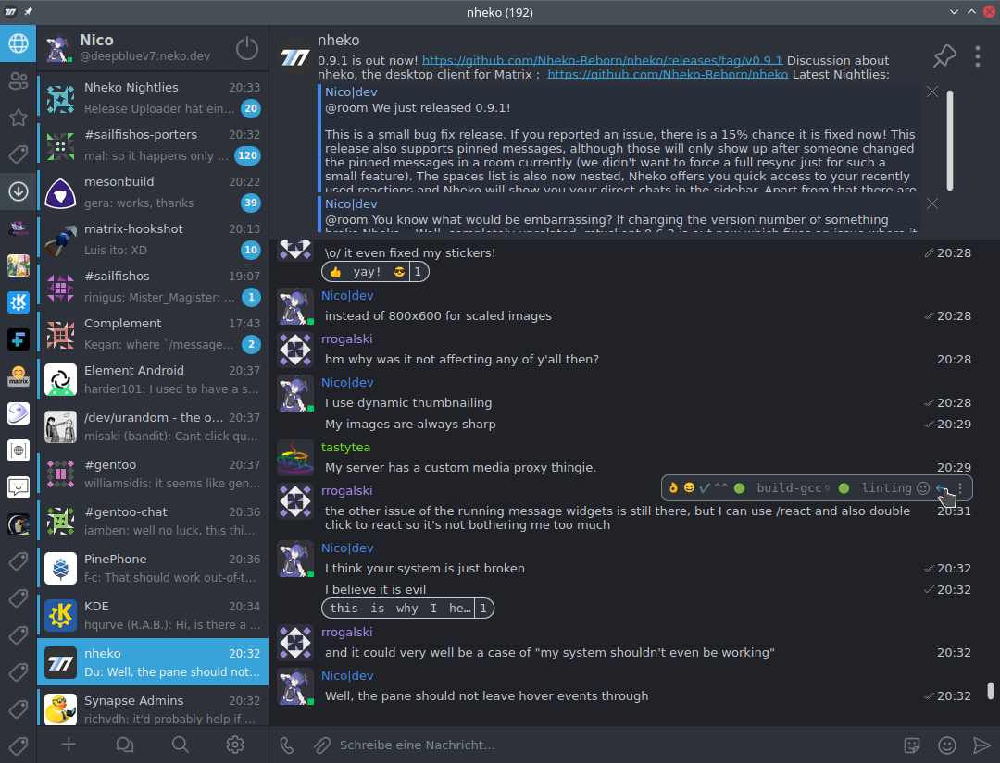
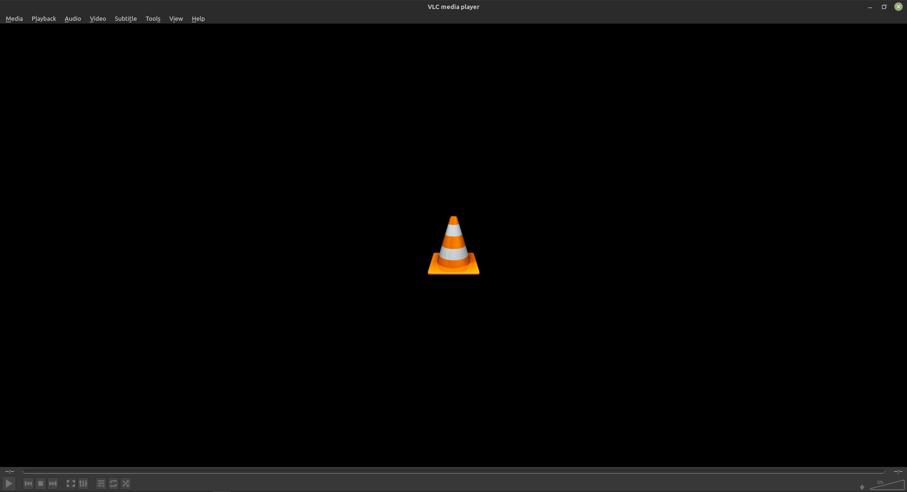

Best less known FOSS for GNU/Linux
Back
Note: This article is in progress and right now only has a small list of 5 programs.

Hello everyone! Today I will be showing you my favorite free and open source software which is less known and is compatible with GNU/Linux operating systems.
These are not sorted in any particular order.
1. VSCodium

VSCodium is a VSCode based editor which removes all Microsoft telemetry while keeping all important functionality.
Website
2. K3b

K3b is a very good utility for burning, ripping and doing all kinds of things with optical media made by KDE.
It's not the most maintained utiltity, but it is useful nonetheless.
More details on KDE's website
3. LXMusic

LXMusic is a simple and lightweight music player made by the LXDE team.
GitHub page
4. LXTask

LXTask is a simple and lightweight GTK2 graphical task manager that packs all necessary info into a small package.
GitHub page
5. nheko

nheko is an advanced and super customizable client for the chat platform called Matrix.
It currently lacks a bit of polish but if you are an advanced user and you don't mind it, I highly recommend it.
Website
6. VLC

VLC Media Player is an open source and customizable media player. It runs pretty much everywhere and plays pretty much every media file.
Website
Back